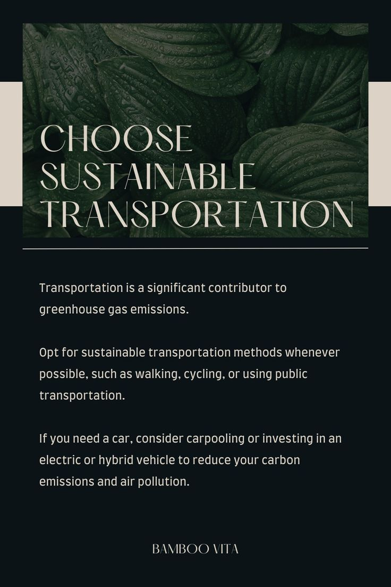

1. How to Obtain a Green Job.
Research and identify industries with a focus on sustainability and environmental responsibility.
Acquire relevant education, certifications, or training in green technologies and practices.
Network with professionals in the green sector and attend relevant events to enhance job prospects.
2. How to Implement Green Jobs or Transition Existing Jobs.
Evaluate existing job roles for opportunities to integrate green practices.
Collaborate with management to introduce eco-friendly policies and initiatives.
Advocate for and implement sustainable practices within the workplace.
Encourage continuous learning and training for employees to adapt to green technologies.
3. Challenges and Implications Associated with a Green Job
- Identify potential challenges such as initial costs, resistance to change, and limited awareness.
- Explore implications like job displacement in certain industries due to the
shift towards sustainability.
- Research possible hurdles in adapting to new technologies and practices.
4. Overcoming Challenges and Implications in Pursuing a Green Job
- Develop comprehensive training programs to address skill gaps in the workforce.
- Implement financial incentives for businesses transitioning to green practices.
- Foster public awareness campaigns to educate communities about the benefits of green jobs.
- Collaborate with government agencies and non-profit organizations to create supportive policies.

5. Impact of Green Jobs on the Environment:
- Assess positive impacts, such as reduced carbon emissions, conservation of natural resources, and biodiversity preservation.
- Recognize potential negative impacts, such as the environmental footprint of certain technologies and industries.
6. Solutions on How Green Jobs Will Improve the Environment:
- Encourage the development and use of renewable energy sources.
- Invest in sustainable agriculture and forestry practices.
- Promote waste reduction and recycling initiatives.
- Support the development of green technologies and innovations.